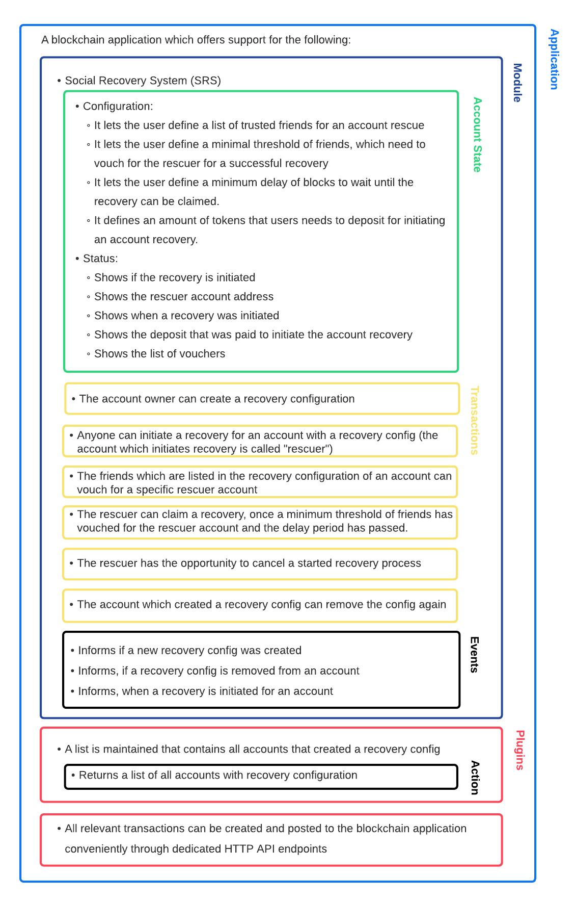
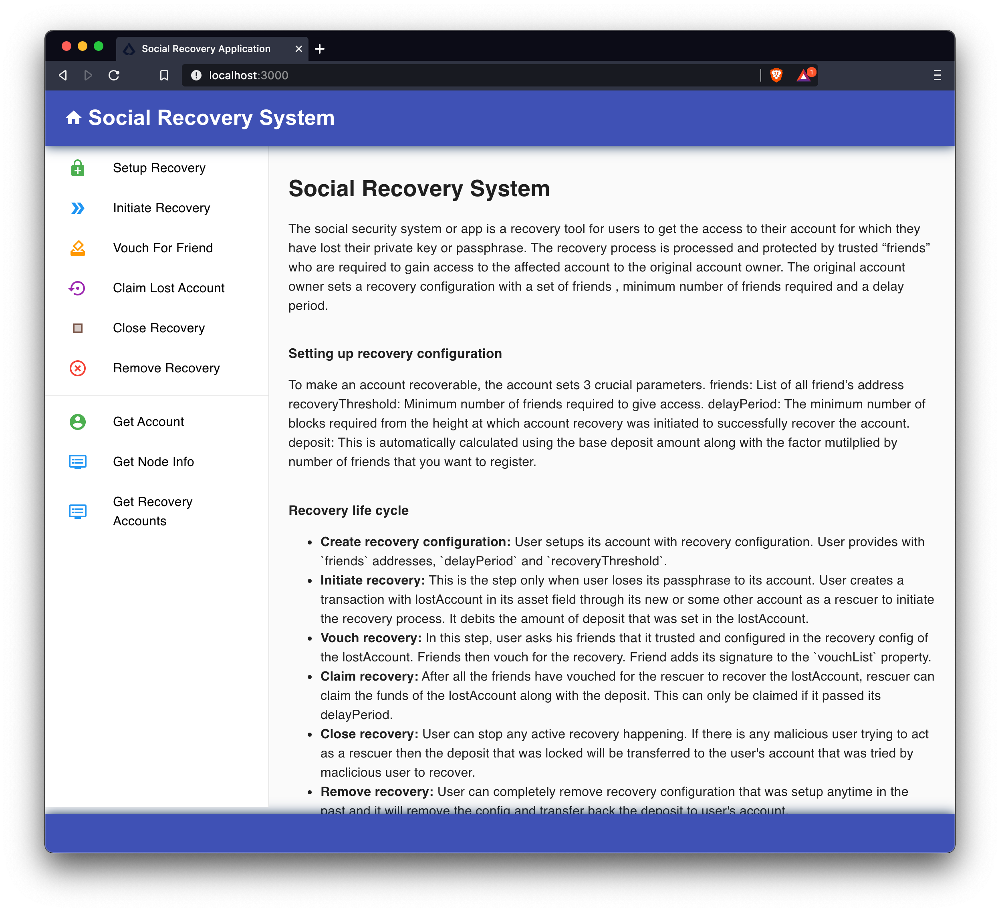
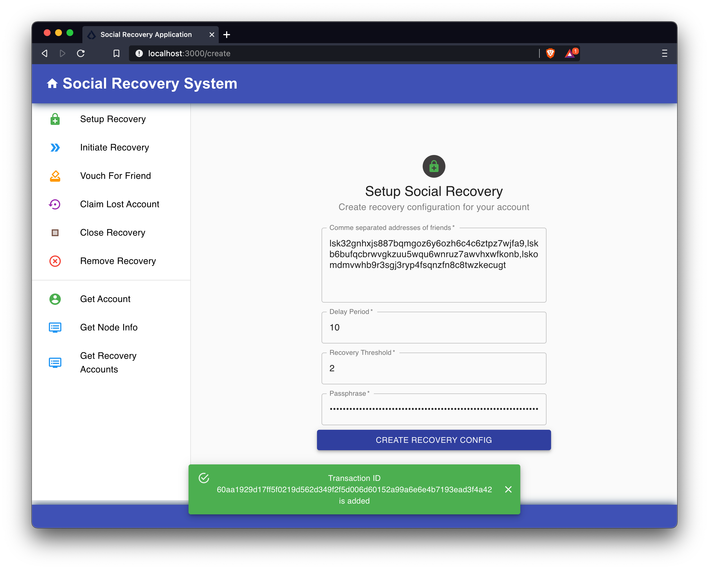
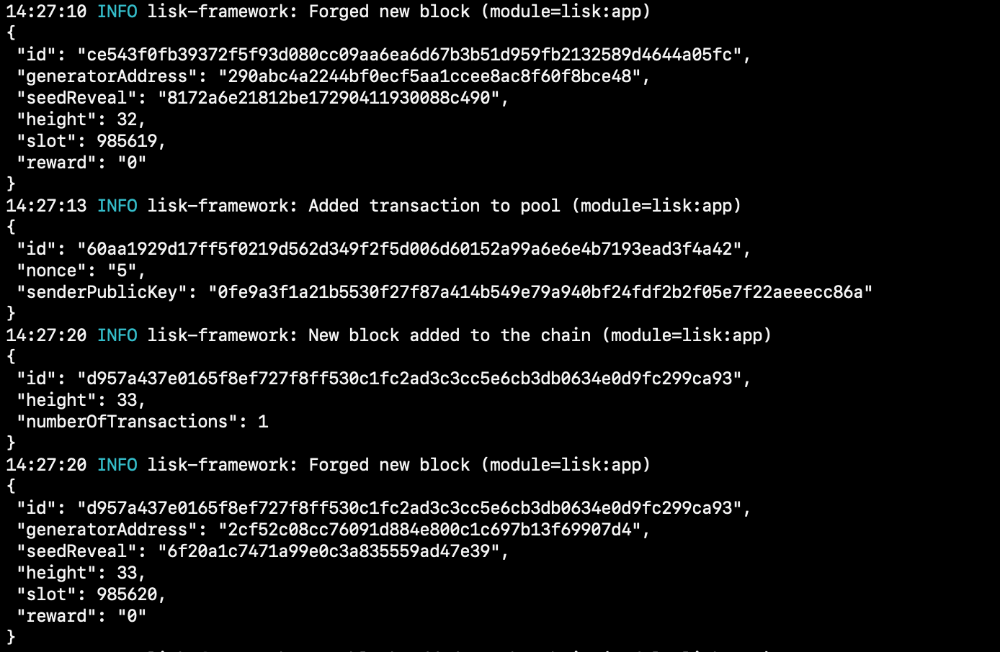
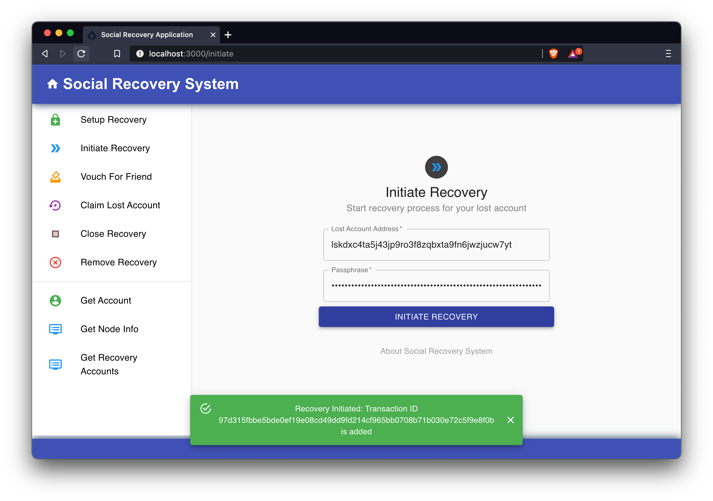
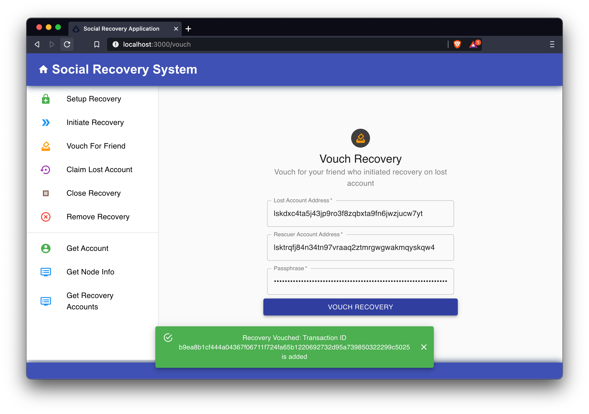
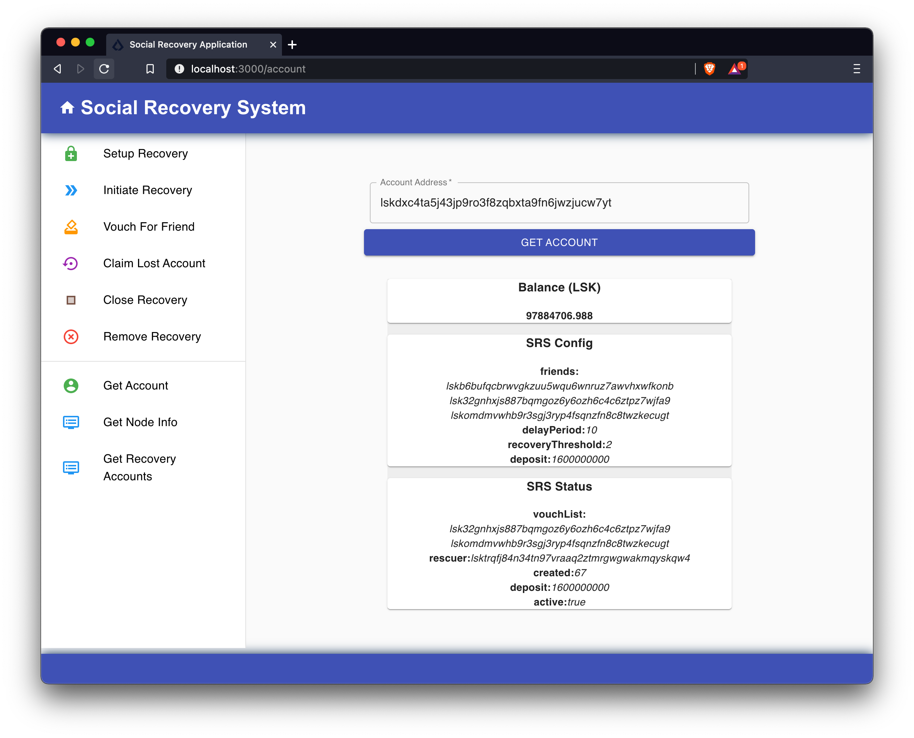
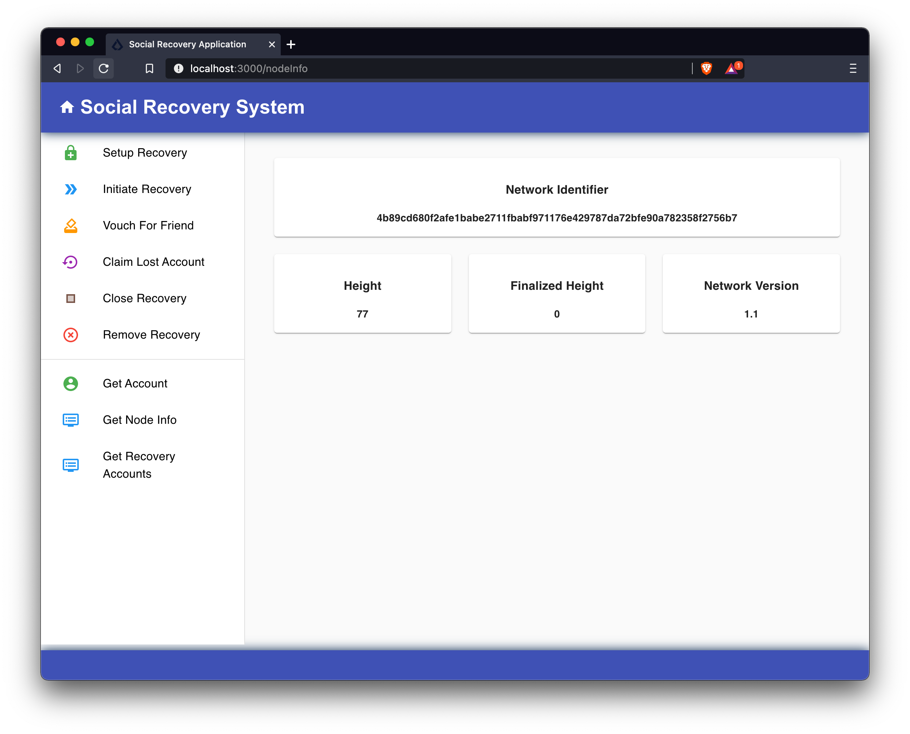
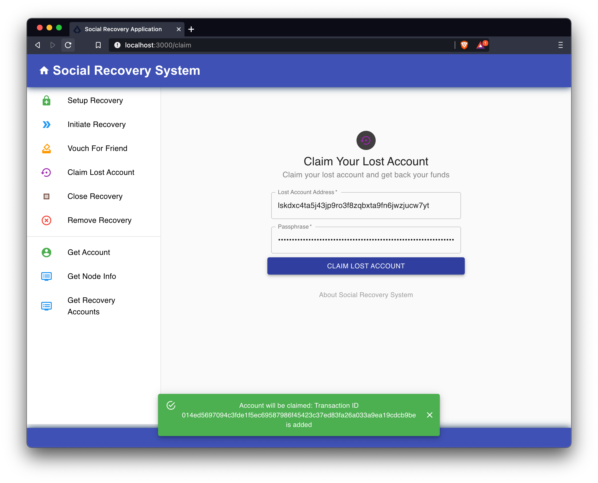
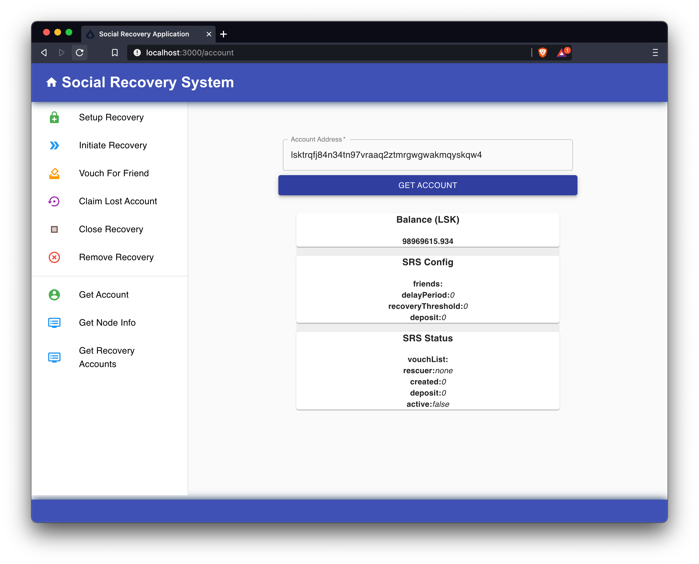

Social Recovery System (SRS) Tutorial
How to create a blockchain application which offers users a feature to recover the balance of their accounts for the scenario whereby their passphrase has been lost or forgotten.
The goal is to build an account recovery tool where a user asks friends to provide access to the funds of a lost account. The user defines a recovery configuration initially by setting a list of friends and other specific parameters for the recovery.
| For the full code example please see the SRS app on GitHub. |
SRS application overview

As explained in the illustration above, it is necessary to create the following components:
-
The SRS module (on-chain)
-
6 new transaction assets for the SRS module
-
3 SRS-specific events
-
-
Plugins (off-chain)
-
The SRS data plugin
-
1 action
-
-
The SRS API plugin
-
In addition to the blockchain application, a frontend application will also be implemented which will allow the user to interact with the blockchain application through a UI (User Interface), in the browser.
1. Project setup
Create a new folder which will contain all the files for the SRS app. The Social Recovery System consists of two applications: The blockchain application and the frontend application. First, create the folder for the blockchain application, initialize a new Node.js project and install the Lisk SDK as a dependency.
mkdir srs
mkdir srs/blockchain_app
cd srs/blockchain_app
npm init --yes
npm i lisk-sdkNext, create a new file index.js and paste the following:
const { Application, genesisBlockDevnet, configDevnet } = require('lisk-sdk');
const app = Application.defaultApplication(genesisBlockDevnet, configDevnet);
app
.run()
.then(() => app.logger.info('App started...'))
.catch(error => {
console.error('Faced error in application', error);
process.exit(1);
});This code snippet creates a default blockchain application, which is configured for development purposes. Use this app as the basis for the SRS app and extend it with a module and a plugin in the next steps to suit the desired use case.
At this point, it is already possible to start the blockchain application by running node index.js in the terminal.
To verify the successful start of the application, observe the logs in the terminal for possible errors.
If everything is correct, the application will start to add new blocks to the chain every 10 seconds after the initial start.
2. Transaction assets
Users shall have the ability to perform the following:
-
Create recovery configs for their account.
-
Initiate a recovery for an account which has a recovery config.
-
Vouch for a rescuer account, if certain conditions are met.
-
Claim a recovery, if certain conditions are met.
-
Cancel a recovery, for example, if a lost passphrase from the old account was found again.
-
Remove a recovery config from the account.
2.1. Constants
Inside of the transaction assets, the following constants will be utilized:
| Name | Value | Description |
|---|---|---|
BASE_RECOVERY_DEPOSIT |
'1000000000' |
The base recovery deposit, used to calculate the deposit for an account recovery. |
FRIEND_FACTOR_FEE |
2 |
The friend factor fee, used to calculate the deposit for an account recovery. |
CREATE_RECOVERY_ASSET_ID |
0 |
Asset ID for the |
INITIATE_RECOVERY_ASSET_ID |
1 |
Asset ID for the |
VOUCH_RECOVERY_ASSET_ID |
2 |
Asset ID for the |
CLAIM_RECOVERY_ASSET_ID |
3 |
Asset ID for the |
CLOSE_RECOVERY_ASSET_ID |
4 |
Asset ID for the |
REMOVE_RECOVERY_ASSET_ID |
5 |
Asset ID for the |
Create a new file constants.js and paste the following contents:
const BASE_RECOVERY_DEPOSIT = '1000000000';
const FRIEND_FACTOR_FEE = 2;
const CREATE_RECOVERY_ASSET_ID = 0;
const INITIATE_RECOVERY_ASSET_ID = 1;
const VOUCH_RECOVERY_ASSET_ID = 2;
const CLAIM_RECOVERY_ASSET_ID = 3;
const CLOSE_RECOVERY_ASSET_ID = 4;
const REMOVE_RECOVERY_ASSET_ID = 5;
module.exports = {
BASE_RECOVERY_DEPOSIT,
FRIEND_FACTOR_FEE,
CREATE_RECOVERY_ASSET_ID,
VOUCH_RECOVERY_ASSET_ID,
CLAIM_RECOVERY_ASSET_ID,
CLOSE_RECOVERY_ASSET_ID,
INITIATE_RECOVERY_ASSET_ID,
REMOVE_RECOVERY_ASSET_ID,
};2.2. Setting up module and transaction folders
Now, create the corresponding transaction assets for the SRS module. These transaction assets each define both, the asset schema for the transaction data, and the logic how this data is applied and stored in the database.
Create a new folder srs_module/ and inside another new folder transactions:
mkdir srs_module
mkdir srs_module/transactions (1)
cd srs_module/transactions/| 1 | Create a new folder transactions/ which will contain the files for the transaction assets. |
2.3. createRecovery asset
Create a new file create_recovery.js inside the newly created transactions/ folder.
Now open the file and paste the code below:
const { BaseAsset } = require("lisk-sdk");
// extend base asset to implement the custom asset
class CreateRecoveryAsset extends BaseAsset { (1)
}
module.exports = CreateRecoveryAsset; (2)| 1 | Extend from the base asset to implement a custom asset. |
| 2 | Export the asset, so it can be imported later into the custom module. |
Now all required properties for the transaction asset are defined in sequential order.
2.3.1. Asset ID and name
const { BaseAsset } = require("lisk-sdk");
const { CREATE_RECOVERY_ASSET_ID } = require('../constants');
// extend base asset to implement your custom asset
class CreateRecoveryAsset extends BaseAsset {
// define unique asset name and id
name = "createRecovery"; (1)
id = CREATE_RECOVERY_ASSET_ID; (2)
}
module.exports = CreateRecoveryAsset;| 1 | Set the asset name to "createRecovery". |
| 2 | Set the asset ID to CREATE_RECOVERY_ASSET_ID(=0) from the constants.js file. |
2.3.2. Asset schema
The asset schema describes the required datatypes and the structure of the data in the respective transaction asset.
| For more information how schemas are used in the application, check out the Codec & schema reference. |
For creating a recovery configuration, the following information is required:
-
friends: A list of trusted addresses. -
recoveryThreshold: Minimum amount of friends that need to vouch for a rescuer, before the rescuer can claim the recovery. -
delayPeriod: The minimum number of blocks required from the height at which the account recovery was initiated to successfully recover the account.
Create a new file schemas.js.
The schemas which are reused later in different places of the module and assets are stored here.
const createRecoverySchema = {
$id: 'srs/recovery/create',
type: 'object',
required: ['friends', 'recoveryThreshold', 'delayPeriod'],
properties: {
friends: {
type: 'array',
fieldNumber: 1,
items: {
dataType: 'bytes',
},
},
recoveryThreshold: {
dataType: 'uint32',
fieldNumber: 2,
},
delayPeriod: {
dataType: 'uint32',
fieldNumber: 3,
},
},
};
module.exports = { createRecoverySchema };Now import the asset schema into create_recovery.js.
const { BaseAsset } = require('lisk-sdk');
const { CREATE_RECOVERY_ASSET_ID } = require('../constants');
const { createRecoverySchema } = require('../schemas');
class CreateRecoveryAsset extends BaseAsset {
name = 'createRecovery';
id = CREATE_RECOVERY_ASSET_ID;
schema = createRecoverySchema;
}
module.exports = CreateRecoveryAsset;2.3.3. The apply function
The apply() function has access to:
-
asset: the posted transaction asset. -
stateStore: The state store is a data structure that maintains a temporary state while processing a block. It is used here to get and set certain data from and to the database. -
reducerHandler: This allows the usage of reducer functions of other modules inside theapply()function. -
transaction: the complete transaction object.
const { BaseAsset, transactions } = require('lisk-sdk');
const { createRecoverySchema } = require('../schemas');
const { BASE_RECOVERY_DEPOSIT, FRIEND_FACTOR_FEE, CREATE_RECOVERY_ASSET_ID } = require('../constants');
class CreateRecoveryAsset extends BaseAsset {
name = 'createRecovery';
id = CREATE_RECOVERY_ASSET_ID;
schema = createRecoverySchema;
async apply({
asset,
transaction,
stateStore,
}) {
const sender = await stateStore.account.get(transaction.senderAddress);
if (sender.srs.config && sender.srs.config.friends.length !== 0) {
throw Error('Account already has a recovery configuration.')
}
const sameAccount = asset.friends.find(f => f === sender.address);
if (sameAccount) {
throw new Error('You cannot add yourself to your own friend list.');
}
// Add friends to the list
sender.srs.config.friends = [...asset.friends.sort()];
// Minimum number of friends required to vouch
sender.srs.config.recoveryThreshold = asset.recoveryThreshold;
// Minimum number of blocks after recovery process when account will be recoverable
sender.srs.config.delayPeriod = asset.delayPeriod;
// Set the deposit based on number of friends, 10 + friends.length * 2
const deposit = BigInt(BASE_RECOVERY_DEPOSIT) + BigInt(transactions.convertLSKToBeddows((sender.srs.config.friends.length * FRIEND_FACTOR_FEE).toString()));
sender.srs.config.deposit = deposit;
// Save the value in stateStore
await stateStore.account.set(sender.address, sender);
}
}
module.exports = CreateRecoveryAsset;The other transaction assets are created analog to the CreateRecoveryAsset.
Examples and descriptions for every asset are displayed below.
2.4. initiateRecovery asset
Create a new file initiate_recovery.js inside the transactions/ folder.
This will contain the logic for the transaction asset which initiates a recovery for a given account address.
The following logic is implemented:
-
The asset contains the property
lostAccount, which is the address of the account that is intended to be recovered. -
You cannot initiate a recovery for your own account.
-
The account in
lostAccountneeds to have a recovery configuration for a successful initialization. If no recovery configuration is found, it should throw an error. -
The rescuer needs to pay the deposit defined in the recovery configuration of the lost account. If the rescuer doesn’t have an adequate balance, it should throw an error.
-
If no error is thrown, the recovery status of the lost account is updated in the following manner:
-
The recovery status is set to
true. -
The rescuer is set to the address of the sender of the
initiateRecoverytransaction. -
The current blockchain height is saved to log when the recovery was initiated.
-
const { BaseAsset } = require('lisk-sdk');
const { initiateRecoverySchema } = require('../schemas');
const { INITIATE_RECOVERY_ASSET_ID } = require('../constants');
class InitiateRecoveryAsset extends BaseAsset {
name = 'initiateRecovery';
id = INITIATE_RECOVERY_ASSET_ID;
schema = initiateRecoverySchema;
async apply({
asset,
transaction,
stateStore,
reducerHandler,
}) {
const rescuer = await stateStore.account.get(transaction.senderAddress);
const lostAccount = await stateStore.account.get(asset.lostAccount);
const sameAccount = lostAccount.srs.config.friends.find(f => f === rescuer.address);
if (sameAccount) {
throw new Error('You cannot recover your own account.');
}
// Check if recovery configuration is present for the lost account or not
if (lostAccount.srs.config && lostAccount.srs.config.friends.length === 0) {
throw Error('Lost account has no recovery configuration.')
}
const currentHeight = stateStore.chain.lastBlockHeaders[0].height;
const deposit = lostAccount.srs.config.deposit;
// Check if rescuer account has enough balance
const rescuerBalance = await reducerHandler.invoke('token:getBalance', {
address: rescuer.address,
});
if (deposit > rescuerBalance) {
throw new Error('Rescuer doesnt have enough balance to deposit for recovery process.');
}
// Deduct the balance from rescuer and update rescuer account
await reducerHandler.invoke('token:debit', {
address: rescuer.address,
amount: deposit,
});
// Update lost account address to active recovery
lostAccount.srs.status.active = true;
lostAccount.srs.status.rescuer = rescuer.address;
lostAccount.srs.status.created = currentHeight;
lostAccount.srs.status.deposit = deposit;
lostAccount.srs.status.vouchList = [];
// Save lost account values to stateStore
await stateStore.account.set(lostAccount.address, lostAccount);
}
}
module.exports = InitiateRecoveryAsset;2.5. vouchRecovery asset
Create a new file vouch_recovery.js inside the transactions/ folder.
This will contain the logic for the transaction asset which allows friends to vouch for an account that initiated a recovery.
The following logic is implemented:
-
The asset contains:
-
the property
lostAccount, which is the address of the account that is intended to be recovered. -
the property
rescuer, which is the address of the account that wants to recover thelostAccount.
-
-
If the
rescueris not the account that has initiated a recovery for thelostAccountthen an error will be thrown. -
If the account that vouches for the rescuer is not listed under
friendsin the recovery config of thelostAccount, then an error will be thrown. -
If the friend has vouched for the rescuer before, then an error will be thrown.
-
If all conditions are met, add the friend’s address to the
vouchListin thelostAccountdetails.
const { BaseAsset } = require('lisk-sdk');
const { vouchRecoverySchema } = require('../schemas');
const { VOUCH_RECOVERY_ASSET_ID } = require('../constants');
class VouchRecoveryAsset extends BaseAsset {
name = 'vouchRecovery';
id = VOUCH_RECOVERY_ASSET_ID;
schema = vouchRecoverySchema;
async apply({
asset,
transaction,
stateStore,
}) {
const sender = await stateStore.account.get(transaction.senderAddress);
const lostAccount = await stateStore.account.get(asset.lostAccount);
const rescuer = await stateStore.account.get(asset.rescuer);
// Make sure rescuer and lost account match according to config settings
if (!lostAccount.srs.status.rescuer.equals(rescuer.address)) {
throw new Error(`Rescuer address is incorrect for the recovery of ${lostAccount.address.toString('hex')}`)
}
const found = lostAccount.srs.config.friends.find(f => f.equals(sender.address));
// Make sure friend is present in the configuration
if (!found) {
throw new Error('The sender is not part of friends who can vouch for rescuer for recovery process.')
}
const foundSignature = lostAccount.srs.status.vouchList.find(f => f.equals(sender.address));
// Make sure the friend has not already voted
if (foundSignature) {
throw new Error('The sender has already vouched for the rescuer for recovery process.')
}
// Push signature to vouch list
lostAccount.srs.status.vouchList.push(sender.address);
await stateStore.account.set(lostAccount.address, lostAccount);
}
}
module.exports = VouchRecoveryAsset;2.6. claimRecovery asset
Create a new file claim_recovery.js inside the transactions/ folder.
This will contain the logic for the transaction asset which allows the rescuer account to claim the tokens of the lost account after all conditions are met.
The following logic is implemented:
-
The asset contains the property
lostAccount, which is the address of the account that is intended to be recovered. -
If not enough blocks have passed since initialization of the recovery, then an error will be thrown. The amount of blocks that need to have passed since initialization is defined in the
delayPeriodproperty of the recovery configuration. -
If not enough friends have vouched for the rescuer account, then an error will be thrown. The amount of friends in the
vouchListneeds to be equal or greater than therecoveryThresholdproperty of the recovery configuration. -
If all conditions are met then perform the following:
-
Transfer the balance from the
lostAccountto the rescuer account. -
Reset the recovery configuration and status of the
lostAccount.
-
It is always required to leave a minimum account balance inside of the lostAccount, so it is not possible to empty it completely.
|
const { BaseAsset } = require('lisk-sdk');
const { claimRecoverySchema } = require('../schemas');
const { CLAIM_RECOVERY_ASSET_ID } = require('../constants');
class ClaimRecoveryAsset extends BaseAsset {
name = 'claimRecovery';
id = CLAIM_RECOVERY_ASSET_ID;
schema = claimRecoverySchema;
async apply({
asset,
transaction,
stateStore,
reducerHandler,
}) {
const rescuer = await stateStore.account.get(transaction.senderAddress);
const lostAccount = await stateStore.account.get(asset.lostAccount);
const currentHeight = stateStore.chain.lastBlockHeaders[0].height;
const delayPeriod = lostAccount.srs.config.delayPeriod;
const recoveryThreshold = lostAccount.srs.config.recoveryThreshold;
const deposit = lostAccount.srs.config.deposit;
// Check if the delay period is passed to claim the recovery
if ((currentHeight - rescuer.srs.status.created) < delayPeriod) {
throw new Error(`Cannot claim account before delay period of ${delayPeriod}.`);
}
// Check if the recovery has received minimum number of vouch from friends
if (lostAccount.srs.status.vouchList.length < recoveryThreshold) {
throw new Error(`Cannot claim account until minimum threshold of ${lostAccount.srs.config.friends.length} friends have vouched.`);
}
const minBalance = await reducerHandler.invoke('token:getMinRemainingBalance');
// Get the account balance of lost account
const lostAccountBalance = await reducerHandler.invoke('token:getBalance', {
address: lostAccount.address,
});
await reducerHandler.invoke('token:debit', {
address: lostAccount.address,
// Get the deposit back from the lost account as well as your own deposit that was locked
amount: lostAccountBalance - minBalance,
});
await reducerHandler.invoke('token:credit', {
address: rescuer.address,
// Get the deposit back from the lost account as well as your own deposit that was locked
amount: BigInt(2) * deposit + lostAccountBalance - minBalance,
});
// Reset recovery status
await stateStore.account.set(rescuer.address, rescuer);
// Reset all recovery values in the lost account
lostAccount.srs.config.friends = [];
lostAccount.srs.config.delayPeriod = 0;
lostAccount.srs.config.recoveryThreshold = 0;
lostAccount.srs.config.deposit = BigInt('0');
lostAccount.srs.status.active = false;
lostAccount.srs.status.rescuer = Buffer.from('');
lostAccount.srs.status.created = 0;
lostAccount.srs.status.deposit = BigInt('0');
lostAccount.srs.status.vouchList = [];
await stateStore.account.set(lostAccount.address, lostAccount);
}
}
module.exports = ClaimRecoveryAsset;2.7. closeRecovery asset
Create a new file close_recovery.js inside the transactions/ folder.
This will contain the logic for the transaction asset which allows closing an active recovery, for example, in the case whereby the lost credentials were found.
The following logic is implemented:
-
The asset contains the property
rescuer, which is the address of the account that initialized the account recovery. -
An account recovery needs to be initialized for the account to be able to close it.
-
An active recovery can only be closed by the original account.
-
The deposit which was debited from the rescuer account during the recovery initialization is credited to the original account.
-
The recovery status in the original account is reset.
const { BaseAsset } = require('lisk-sdk');
const { closeRecoverySchema } = require('../schemas');
const { CLOSE_RECOVERY_ASSET_ID } = require('../constants');
class CloseRecoveryAsset extends BaseAsset {
name = 'closeRecovery';
id = CLOSE_RECOVERY_ASSET_ID;
schema = closeRecoverySchema;
async apply({
asset,
transaction,
stateStore,
reducerHandler,
}) {
const lostAccount = await stateStore.account.get(transaction.senderAddress);
if (!lostAccount.srs.status.active) {
throw new Error(`No active recovery found for address ${lostAccount.address.toString('hex')}.`);
}
if (!lostAccount.srs.status.rescuer.equals(asset.rescuer)) {
throw new Error(`Incorrect rescuer address`);
}
await reducerHandler.invoke('token:credit', {
address: lostAccount.address,
amount: lostAccount.srs.config.deposit,
});
// Reset recovery status
lostAccount.srs.status.active = false;
lostAccount.srs.status.rescuer = Buffer.from('');
lostAccount.srs.status.created = 0;
lostAccount.srs.status.deposit = BigInt('0');
lostAccount.srs.status.vouchList = [];
await stateStore.account.set(lostAccount.address, lostAccount);
}
}
module.exports = CloseRecoveryAsset;2.8. removeRecovery asset
Create a new file remove_recovery.js inside the transactions/ folder.
This will contain the logic for the transaction asset which allows the owner of an account to remove a previously created recovery configuration from their account.
The following logic is implemented:
-
The asset contains the property
lostAccount. -
Only accounts with created recovery configurations can remove the configurations again (obviously).
-
The recovery status has to be inactive to be able to remove a recovery configuration.
-
If the conditions are met, the recovery config and status inside the original account are reset completely.
const {
BaseAsset
} = require('lisk-sdk');
const { removeRecoverySchema } = require('../schemas');
const { REMOVE_RECOVERY_ASSET_ID } = require('../constants');
class RemoveRecoveryAsset extends BaseAsset {
name = 'removeRecovery';
id = REMOVE_RECOVERY_ASSET_ID;
schema = removeRecoverySchema;
async apply({
transaction,
stateStore,
reducerHandler,
}) {
const lostAccount = await stateStore.account.get(transaction.senderAddress);
if (lostAccount.srs.config.friends.length === 0) {
throw Error('Account does not have a recovery configuration.')
}
if (lostAccount.srs.status.active) {
throw Error('There is active recovery in process. Please close the recovery to remove recovery configuration.')
}
// Reset all the default values
lostAccount.srs.config.friends = [];
lostAccount.srs.config.recoveryThreshold = 0;
lostAccount.srs.config.delayPeriod = 0;
lostAccount.srs.config.deposit = BigInt('0');
lostAccount.srs.status.rescuer = Buffer.from('');
lostAccount.srs.status.deposit = BigInt('0');
lostAccount.srs.status.vouchList = [];
lostAccount.srs.status.created = 0;
lostAccount.srs.status.active = false;
await stateStore.account.set(lostAccount.address, lostAccount);
}
}
module.exports = RemoveRecoveryAsset;|
Don’t forget to update schemas.js to include the schemas of the new transaction assets. |
Now that all the transaction assets are implemented, the SRS module can be created which will contain the newly created assets and some additional logic.
3. The SRS module
Inside the srs_module/ folder, create a new file index.js.
Open index.js and create the skeleton which will contain all parts of the SRS module:
3.1. Module ID and name
Set the unique identifier for the SRS module to srs, and the module ID to 1026.
| Module ID until 1000 is reserved by Lisk SDK for future default modules. |
const { BaseModule } = require('lisk-sdk');
// Extend from the base module to implement a custom module
class SRSModule extends BaseModule {
name = 'srs';
id = 1026;
}
module.exports = { SRSModule };3.2. The account schema
Open the schemas.js file again which was created in section Asset schema, and add the account schema for the SRS module:
//...
const SRSAccountSchema = {
type: 'object',
required: ['config'],
properties: {
config: {
fieldNumber: 1,
type: 'object',
required: ['friends'],
properties: {
friends: {
type: 'array',
fieldNumber: 1,
items: {
dataType: 'bytes',
},
},
recoveryThreshold: {
dataType: 'uint32',
fieldNumber: 2,
},
delayPeriod: {
dataType: 'uint32',
fieldNumber: 3,
},
deposit: {
dataType: 'uint64',
fieldNumber: 4,
}
},
default: {
friends: [],
recoveryThreshold: 0,
delayPeriod: 0,
},
},
status: {
fieldNumber: 2,
type: 'object',
properties: {
rescuer: {
dataType: 'bytes',
fieldNumber: 1,
},
created: {
dataType: 'uint32',
fieldNumber: 2,
},
deposit: {
dataType: 'uint64',
fieldNumber: 3,
},
vouchList: {
type: 'array',
fieldNumber: 4,
items: {
dataType: 'bytes',
},
},
active: {
dataType: 'boolean',
fieldNumber: 5,
},
},
}
},
default: {
config: {
friends: [],
recoveryThreshold: 0,
delayPeriod: 0,
},
status: {
active: false,
vouchList: [],
created: 0,
deposit: BigInt(0),
rescuer: Buffer.from(''),
},
},
};
module.exports = { SRSAccountSchema, createRecoverySchema, initiateRecoverySchema, removeRecoverySchema };Now use the SRSAccountSchema inside of the module:
const { BaseModule } = require('lisk-sdk');
const { SRSAccountSchema } = require('./schemas');
// Extend from the base module to implement a custom module
class SRSModule extends BaseModule {
name = 'srs';
id = 1026;
accountSchema = SRSAccountSchema;
}
module.exports = { SRSModule };3.3. Importing the transaction assets into the module
Now let’s import the transactions which were created in section 2: Transaction assets into the module.
Add them to the tansactionAssets property as shown in the snippet below:
|
Best practice
It is good practice to name the imported transaction assets after their corresponding classname. In this example: |
const { BaseModule } = require('lisk-sdk');
const CreateRecoveryAsset = require('./assets/create_recovery');
const ClaimRecoveryAsset = require('./assets/claim_recovery');
const InitiateRecoveryAsset = require('./assets/initiate_recovery');
const VouchRecoveryAsset = require('./assets/vouch_recovery');
const CloseRecoveryAsset = require('./assets/close_recovery');
const RemoveRecoveryAsset = require('./assets/remove_recovery');
const { SRSAccountSchema } = require('./schemas');
// Extend from the base module to implement a custom module
class SRSModule extends BaseModule {
name = 'srs';
id = 1026;
accountSchema = SRSAccountSchema;
transactionAssets = [
new CreateRecoveryAsset(),
new InitiateRecoveryAsset(),
new VouchRecoveryAsset(),
new ClaimRecoveryAsset(),
new CloseRecoveryAsset(),
new RemoveRecoveryAsset(),
];
}
module.exports = { SRSModule };3.4. Events
As described in section SRS application overview, define three different events:
-
configCreated -
configRemoved -
recoveryInitiated
const { BaseModule } = require('lisk-sdk');
const CreateRecoveryAsset = require('./assets/create_recovery');
const ClaimRecoveryAsset = require('./assets/claim_recovery');
const InitiateRecoveryAsset = require('./assets/initiate_recovery');
const VouchRecoveryAsset = require('./assets/vouch_recovery');
const CloseRecoveryAsset = require('./assets/close_recovery');
const RemoveRecoveryAsset = require('./assets/remove_recovery');
const { SRSAccountSchema } = require('./schemas');
// Extend from the base module to implement a custom module
class SRSModule extends BaseModule {
name = 'srs';
id = 1026;
accountSchema = SRSAccountSchema;
transactionAssets = [
new CreateRecoveryAsset(),
new InitiateRecoveryAsset(),
new VouchRecoveryAsset(),
new ClaimRecoveryAsset(),
new CloseRecoveryAsset(),
new RemoveRecoveryAsset(),
];
events = ['configCreated','configRemoved','recoveryInitiated'];
}
module.exports = { SRSModule };3.5. Lifecycle hooks
Use the life cycle hooks of the module to publish the events that were just created in the Events section.
The hook afterTransactionApply() is used here.
It is executed each time after a transaction is applied on the blockchain.
The following events are fired:
-
srs:configCreatedwhen a create recovery transaction is applied. -
srs:configRemovedwhen a claim recovery or a remove recovery transaction is applied. -
srs:recoveryInitiatedwhen a initiateRecovery transaction is applied.
const { BaseModule, codec } = require('lisk-sdk');
const CreateRecoveryAsset = require('./assets/create_recovery');
const ClaimRecoveryAsset = require('./assets/claim_recovery');
const InitiateRecoveryAsset = require('./assets/initiate_recovery');
const VouchRecoveryAsset = require('./assets/vouch_recovery');
const CloseRecoveryAsset = require('./assets/close_recovery');
const RemoveRecoveryAsset = require('./assets/remove_recovery');
const {
SRSAccountSchema,
createRecoverySchema,
initiateRecoverySchema,
claimRecoverySchema
} = require('./schemas');
const {
CREATE_RECOVERY_ASSET_ID,
CLAIM_RECOVERY_ASSET_ID,
INITIATE_RECOVERY_ASSET_ID,
REMOVE_RECOVERY_ASSET_ID
} = require('./constants');
class SRSModule extends BaseModule {
name = 'srs';
id = 1026;
accountSchema = SRSAccountSchema;
transactionAssets = [
new CreateRecoveryAsset(),
new InitiateRecoveryAsset(),
new VouchRecoveryAsset(),
new ClaimRecoveryAsset(),
new CloseRecoveryAsset(),
new RemoveRecoveryAsset(),
];
events = ['configCreated','configRemoved','recoveryInitiated'];
async afterTransactionApply({transaction, stateStore, reducerHandler}) {
if (transaction.moduleID === this.id && transaction.assetID === CREATE_RECOVERY_ASSET_ID) {
let createRecoveryAsset = codec.decode(
createRecoverySchema,
transaction.asset
);
const friends = createRecoveryAsset.friends.map(bufferFriend => bufferFriend.toString('hex'));
this._channel.publish('srs:configCreated', {
address: transaction._senderAddress.toString('hex'),
friends: friends,
recoveryThreshold: createRecoveryAsset.recoveryThreshold,
delayPeriod: createRecoveryAsset.delayPeriod
});
} else if (transaction.moduleID === this.id && transaction.assetID === REMOVE_RECOVERY_ASSET_ID) {
this._channel.publish('srs:configRemoved', {
address: transaction._senderAddress.toString('hex')
});
} else if (transaction.moduleID === this.id && transaction.assetID === CLAIM_RECOVERY_ASSET_ID) {
let claimRecoveryAsset = codec.decode(
claimRecoverySchema,
transaction.asset
);
this._channel.publish('srs:configRemoved', {
address: claimRecoveryAsset.lostAccount.toString('hex')
});
} else if (transaction.moduleID === this.id && transaction.assetID === INITIATE_RECOVERY_ASSET_ID) {
const initiateRecoveryAsset = codec.decode(
initiateRecoverySchema,
transaction.asset
);
this._channel.publish('srs:recoveryInitiated', {
address: transaction._senderAddress.toString('hex'),
asset: initiateRecoveryAsset
});
}
};
}
module.exports = { SRSModule };The implementation of the SRS module is now complete.
4. The SRS data plugin
To be able to conveniently acquire a list of all accounts which created a recovery configuration, create a custom plugin.
First, navigate out of the srs_module folder, and create a new folder plugins for the two plugins we will create for the SRS application.
Inside the plugins folder, create a new folder srs_data_plugin, which will be used to store the files for the new plugin.
mkdir plugins
mkdir plugins/srs_data_plugin
cd plugins/srs_data_pluginNow create a new file index.js inside the newly created srs_data_plugin/ folder.
Open index.js and create the skeleton, which will contain all parts of the SRS data plugin:
const { BasePlugin } = require('lisk-sdk');
const pJSON = require('../../package.json');
class SRSDataPlugin extends BasePlugin { (1)
static get alias() { (2)
return 'SRSData';
}
static get info() { (3)
return {
author: pJSON.author,
version: pJSON.version,
name: pJSON.name,
};
}
get defaults() {
return {};
}
get events() {
return [];
}
}
module.exports = { SRSDataPlugin }; (4)| 1 | Extend from the base plugin to implement a custom plugin. |
| 2 | Set the alias for the plugin to SRSData. |
| 3 | Set the meta information for the plugin.
Here, the data is reused from the package.json file. |
| 4 | Export the plugin, so it can be imported later into the application. |
4.1. The load() function
The following helper functions and constants are defined:
getDBInstance()-
Returns a key-value store for the plugin data, which is stored under the path
~/.lisk/srs-app/plugins/data/srs_data_plugin.db. encodedConfigAccountsSchema-
The schema describes how the accounts and their recovery configurations are saved in the database. We define the following schema for the plugin data:
{
"accounts": [
{
"address": bytes,
"friends": array[bytes],
"recoveryThreshold": number,
"delayPeriod": number
}
]
}getConfigAccounts(database)-
A helper function that returns the list of all accounts with recovery configurations from the database. Inside the
getConfigAccounts()function, use the database keysrs:configAccountsto get the accounts from the database. If there are no accounts saved in the database yet, then an empty list is returned. saveConfigAccounts(database,accounts)-
A helper function that saves the list of all accounts with recovery configurations to the database. Inside the
saveConfigAccounts()function, encode the accounts list for the database. Use the above definedencodedConfigAccountsSchemafor this purpose.
const { BasePlugin, db, codec } = require('lisk-sdk');
const pJSON = require('../../package.json');
const fs_extra = require("fs-extra");
const os = require("os");
const path = require("path");
const DB_KEY_CONFIGACCOUNTS = "srs:configAccounts";
const getDBInstance = async (dataPath = '~/.lisk/srs-app/', dbName = 'srs_data_plugin.db') => {
const dirPath = path.join(dataPath.replace('~', os.homedir()), 'plugins/data', dbName);
await fs_extra.ensureDir(dirPath);
return new db.KVStore(dirPath);
};
const encodedConfigAccountsSchema = {
$id: 'srs:configAccounts',
type: 'object',
required: ['accounts'],
properties: {
accounts: {
type: 'array',
fieldNumber: 1,
items: {
type: 'object',
properties: {
address: {
dataType: 'bytes',
fieldNumber: 1,
},
friends: {
type: 'array',
fieldNumber: 2,
items: {
dataType: 'bytes',
}
},
recoveryThreshold: {
dataType: 'uint32',
fieldNumber: 3
},
delayPeriod: {
dataType: 'uint32',
fieldNumber: 4
}
}
},
},
},
};
const getConfigAccounts = async (database) => {
try {
const encodedConfigAccounts = await database.get(DB_KEY_CONFIGACCOUNTS);
const { accounts } = codec.decode(encodedConfigAccountsSchema, encodedConfigAccounts);
return accounts;
}
catch (error) {
return [];
}
};
const saveConfigAccounts = async (database, accounts) => {
const encodedConfigs = codec.encode(encodedConfigAccountsSchema, { accounts });
await database.put(DB_KEY_CONFIGACCOUNTS, encodedConfigs);
};
class SRSDataPlugin extends BasePlugin {
_accountsWithConfig = undefined;
_db = undefined;
static get alias() {
return 'SRSData';
}
static get info() {
return {
author: pJSON.author,
version: pJSON.version,
name: pJSON.name,
};
}
get defaults() {
return {};
}
get events() {
return [];
}
async load(channel) {
this._db = await getDBInstance(); (1)
this._accountsWithConfig = await getConfigAccounts(this._db); (2)
channel.subscribe('srs:createdConfig', async (info) => { (3)
let duplicate = false;
for (let i = 0; i < this._accountsWithConfig.length; i++) {
if (this._accountsWithConfig[i].address.toString('hex') === info.address) { (4)
duplicate = true;
return;
}
}
if (!duplicate){
info.address = Buffer.from(info.address, 'hex'); (5)
info.friends = info.friends.map(friend => Buffer.from(friend, 'hex'));
this._accountsWithConfig.push(info);
}
await saveConfigAccounts(this._db, this._accountsWithConfig); (6)
});
channel.subscribe('srs:removedConfig', async (info) => { (7)
for (let i = 0; i < this._accountsWithConfig.length; i++) {
if (this._accountsWithConfig[i].address.toString('hex') === info.address) { (8)
this._accountsWithConfig.splice(i, 1);
return;
}
}
await saveConfigAccounts(this._db, this._accountsWithConfig); (9)
});
}
async unload() {
}
}
module.exports = { SRSDataPlugin };| 1 | The database instance for the SRS data plugin is stored in the variable this._db. |
| 2 | The accounts with recovery config are retrieved from the database by calling the above defined function getConfigAccounts() and then stored in the variable this._accountsWithConfig. |
| 3 | Next subscribe to the event srs:createdConfig, which was previously implemented in the section The SRS module. |
| 4 | If a new config was created, check if this._accountsWithConfig already contains this account. |
| 5 | If it doesn’t contain the account yet, prepare the account addresses for the database by converting them into Buffers.
Then push the data into the array this._accountsWithConfig. |
| 6 | The above defined function saveConfigAccounts() is called to save the updated accounts list in the database. |
| 7 | Now listen to a second event srs:removedConfig, which was previously implemented in the section The SRS module. |
| 8 | If the event srs:removedConfig is received, check if the respective account is part of the list this._accountsWithConfig.
If it is found, the account will be removed from the list. |
| 9 | The above defined function saveConfigAccounts() is called to save the updated accounts list in the database. |
4.2. Create an action to get all accounts with recovery configs
To make the plugin data available to the public, create a new action that returns a list of all accounts with recovery configuration.
Add the following code snippet to the existing properties in the SRSDataPlugin class:
get actions() {
return {
getAllRecoveryConfigs: () => { (1)
let stringAccounts = this._accountsWithConfig.map((account) => { (2)
account.address = account.address.toString('hex');
account.friends = account.friends.map(friend => friend.toString('hex'));
return account;
});
return stringAccounts; (3)
},
};
}| 1 | We give the action the name getAllRecoveryConfigs.
The action can be invoked by external services by referring to it as shown here: SRSDataPlugin:getAllRecoveryConfigs. |
| 2 | The account addresses are converted from Buffer to String format for all accounts in this._accountsWithConfig. |
| 3 | The list of all accounts with recovery configs with addresses in hex string format is returned. |
The SRS data plugin is now complete. This will allow the frontend application to receive the list of all accounts with a recovery configuration by connecting to the blockchain application via WebSockets, and invoking the respective action.
5. The SRS API plugin
The SRS API plugin provides HTTP API endpoints to create and post the different transactions of the SRS module, and also for the token transfer transaction.
|
This could be realized alternatively without an HTTP API, by using a WebSocket connection to the blockchain application, as realized in the SRS data plugin. Instead of providing new HTTP API endpoints, the same could be achieved by adding multiple new actions to the plugin, that can be invoked later by the frontend application. As an exercise, you could optionally try to implement all the HTTP endpoints of the SRS API plugin as plugin actions. |
First, navigate out of the srs_data_plugin folder, and create a new folder which will be used to store the files for the SRS API plugin.
mkdir srs_api_plugin
cd srs_api_pluginThen create a new file index.js inside the newly created srs_api_plugin/ folder.
Open index.js and paste the following snippet:
const { BasePlugin } = require('lisk-sdk');
const pJSON = require('../../package.json');
// 1.plugin can be a daemon/HTTP/Websocket service for off-chain processing
class SRSAPIPlugin extends BasePlugin {
_server = undefined;
_app = undefined;
_channel = undefined;
_db = undefined;
_nodeInfo = undefined;
static get alias() {
return 'SRSHttpApi';
}
static get info() {
return {
author: pJSON.author,
version: pJSON.version,
name: pJSON.name,
};
}
get defaults() {
return {};
}
get events() {
return [];
}
get actions() {
return {};
}
}
module.exports = { SRSAPIPlugin };5.1. Controllers
Next we will define multiple controllers for creating and posting the different transaction objects.
Create a new folder to store the different controllers for the API endpoints.
mkdir controllers
cd controllersInside the folder, it is necessary to define the following controllers:
-
transferToken: Creates a transfer transaction and sends it to the blockchain application.
-
createRecoveryConfigTrs: Creates a createRecovery transaction and sends it to the blockchain application.
-
initiateRecovery: Creates a initiateRecovery transaction and sends it to the blockchain application.
-
vouchRecovery: Creates a vouchRecovery transaction and sends it to the blockchain application.
-
claimRecovery: Creates a claimRecovery transaction and sends it to the blockchain application.
-
closeRecovery: Creates a closeRecovery transaction and sends it to the blockchain application.
-
removeRecovery: Creates a removeRecovery transaction and sends it to the blockchain application.
Only the createRecoveryConfigTrs controller is explained here in detail, as the implementation of the different controllers is very similar.
Feel free to copy and paste the files above from GitHub into your own project.
const { transactions, cryptography } = require('@liskhq/lisk-client');
const { createRecoverySchema } = require('../schemas');
const { SRS_CREATE_ASSET_ID, SRS_MODULE_ID, DEFAULT_FEE } = require('../constants');
const createRecoveryConfigTrs = (
codec,
channel,
nodeInfo,
) => async (req, res) => {
try {
const { passphrase, friends, delayPeriod, recoveryThreshold, fee } = req.body;
const asset = { (1)
friends: friends.map(f => Buffer.from(f, 'hex')),
delayPeriod: +delayPeriod,
recoveryThreshold: +recoveryThreshold,
};
const { publicKey } = cryptography.getPrivateAndPublicKeyFromPassphrase(
passphrase
);
const address = cryptography.getAddressFromPassphrase(passphrase);
const account = await channel.invoke('app:getAccount', {
address,
});
const { sequence: { nonce } } = codec.decodeAccount(account);
const { id, ...tx } = transactions.signTransaction( (2)
createRecoverySchema,
{
moduleID: SRS_MODULE_ID,
assetID: SRS_CREATE_ASSET_ID,
nonce: BigInt(nonce),
fee: fee || DEFAULT_FEE,
senderPublicKey: publicKey,
asset,
},
Buffer.from(nodeInfo.networkIdentifier, 'hex'),
passphrase,
);
const encodedTransaction = codec.encodeTransaction(tx); (3)
const result = await channel.invoke('app:postTransaction', { (4)
transaction: encodedTransaction,
});
res.status(200).json({ data: result, meta: {} }); (4)
} catch (err) {
res.status(409).json({
errors: [{ message: err.message }],
});
}
};
module.exports = {
createRecoveryConfigTrs,
};| 1 | Create the transaction asset for the createRecovery transaction, based on the request data. |
| 2 | Create and sign the transaction object by utilizing the signTransaction() method of the transactions library. |
| 3 | Prepare the transaction by encoding it with the encodeTransaction() method of the codec library. |
| 4 | Sets the HTTP status for the API response. |
5.2. The load() and unload() functions
Go back to the index.js file and define what logic shall be executed by the plugin.
Now that all of the controllers are prepared, they can be reused in the SRSAPIPlugin to provide the corresponding API endpoints for each controller.
Add the new function load() into the SRSAPIPlugin with the following contents:
const express = require('express');
const cors = require('cors');
const { BasePlugin } = require('lisk-sdk');
const pJSON = require('../../package.json');
const controllers = require('./controllers');
// 1.plugin can be a daemon/HTTP/Websocket service for off-chain processing
class SRSAPIPlugin extends BasePlugin {
_server = undefined;
_app = undefined;
_channel = undefined;
_db = undefined;
_nodeInfo = undefined;
static get alias() {
return 'SRSHttpApi';
}
static get info() {
return {
author: pJSON.author,
version: pJSON.version,
name: pJSON.name,
};
}
get defaults() {
return {};
}
get events() {
return [];
}
get actions() {
return {};
}
async load(channel) {
this._app = express(); (1)
this._channel = channel;
this._nodeInfo = await this._channel.invoke('app:getNodeInfo');
this._app.use(cors({ origin: '*', methods: ['GET', 'POST', 'PUT'] })); (2)
this._app.use(express.json()); (3)
this._app.post('/api/token/transfer', controllers.transferToken(this.codec, this._channel, this._nodeInfo)); (4)
this._app.post('/api/recovery/create', controllers.createRecoveryConfigTrs(this.codec, this._channel, this._nodeInfo));
this._app.post('/api/recovery/initiate', controllers.initiateRecovery(this.codec, this._channel, this._nodeInfo));
this._app.post('/api/recovery/vouch', controllers.vouchRecovery(this.codec, this._channel, this._nodeInfo));
this._app.post('/api/recovery/claim', controllers.claimRecovery(this.codec, this._channel, this._nodeInfo));
this._app.post('/api/recovery/close', controllers.closeRecovery(this.codec, this._channel, this._nodeInfo));
this._app.post('/api/recovery/remove', controllers.removeRecovery(this.codec, this._channel, this._nodeInfo));
this._server = this._app.listen(8080, '0.0.0.0'); (5)
}
async unload() { (6)
// close http server
await new Promise((resolve, reject) => {
this._server.close((err) => {
if (err) {
reject(err);
return;
}
resolve();
});
});
}
}
module.exports = { SRSAPIPlugin };| 1 | Start the Express server and save it under the variable this._app. |
| 2 | Enable cross-origin resource sharing. |
| 3 | Recognize the incoming request object as a JSON Object. |
| 4 | Define 7 different endpoints:
|
| 5 | The API listens on port 8080 at localhost. |
| 6 | This will close the Express server when the plugin is unloaded again, for example on application shutdown. |
The SRS data plugin is now complete. It will allow the frontend application to conveniently create and post the different transaction types to the blockchain application via dedicated HTTP API endpoints.
6. Registering module & plugins
Now that the SRS module and the two plugins have been implemented, it is necessary to inform the blockchain application about them.
This is performed by registering them with the blockchain application as shown below.
Open the srs/blockchain_app/index.js file again and paste the following code:
// 1.Import lisk sdk to create the blockchain application
const {
Application,
configDevnet,
genesisBlockDevnet,
HTTPAPIPlugin,
utils,
} = require('lisk-sdk');
// 2.Import SRS module & plugins
const { SRSModule } = require('./srs_module');
const { SRSAPIPlugin } = require('./srs_api_plugin/');
const { SRSDataPlugin } = require('./srs_data_plugin/');
// 3.Update the genesis block accounts to include SRS module attributes
genesisBlockDevnet.header.timestamp = 1605699440;
genesisBlockDevnet.header.asset.accounts = genesisBlockDevnet.header.asset.accounts.map(
(account) =>
utils.objects.mergeDeep({}, account, {
srs: {
config: {
friends: [],
recoveryThreshold: 0,
delayPeriod: 0,
},
status: {
active: false,
vouchList: [],
created: 0,
deposit: BigInt(0),
rescuer: Buffer.from(''),
},
},
}),
);
// 4.Update application config to include unique label
// and communityIdentifier to mitigate transaction replay
const appConfig = utils.objects.mergeDeep({}, configDevnet, {
label: 'srs-app',
genesisConfig: { communityIdentifier: 'SRS' }, //In order to have a unique networkIdentifier
logger: {
consoleLogLevel: 'info',
},
rpc: {
enable: true,
mode: 'ws',
port: 8888,
},
});
// 5.Initialize the application with genesis block and application config
const app = Application.defaultApplication(genesisBlockDevnet, appConfig);
// 6.Register custom SRS Module and Plugins
app.registerModule(SRSModule);
app.registerPlugin(HTTPAPIPlugin);
app.registerPlugin(SRSAPIPlugin);
app.registerPlugin(SRSDataPlugin);
// 7.Run the application
app
.run()
.then(() => console.info('SRS Blockchain running....'))
.catch(console.error);Save and close index.js.
Now when the application is started again by running node index.js, the blockchain application will load the newly created SRS module and the plugins, and the new features will become available to the blockchain application.
In the next step, we will build a simple React frontend, which allows us to interact with the blockchain application through the browser.
7. Frontend application
The final part of the social recovery system is the frontend application.
|
The development of the frontend application is completely flexible, and you can use any technology stack that you feel comfortable with. In this example, we use React to build the client application. |
This tutorial predominantly covers and explains how to build with the Lisk SDK, therefore other parts of the frontend app are not explained in great detail. More information about how to build a React application can be found in the official React documentation.
For convenience, clone the development branch from the lisk-sdk-examples GitHub repository and use the prepared SRS frontend_app from the Lisk SDK examples.
git clone https://github.com/LiskHQ/lisk-sdk-examples.git
mv lisk-sdk-examples/tutorials/social-recovery/frontend_app frontend_app
rm -r ./lisk-sdk-examples
cd frontend_app
npm iAt this point it is now possible to try out the frontend and verify that the SRS blockchain application works as expected:
First open a second terminal window, navigate to srs/blockchain_app and start the blockchain application with node index.js, if it is not already running.
In the first terminal window, start the frontend application as shown below:
npm startThis should open the React app in the browser under http://localhost:3000/.
|
To reset the database of the application, remove the |
7.1. Frontend walkabout
Before we explore the code of the frontend app, lets first take a tour through the frontend in the browser, to see how it all works together.
The following scenario is performed:
-
Five different accounts are created and prepared with an initial amount of tokens in their balance. The accounts have the following roles:
-
Original account
-
Rescuer
-
Friend 1
-
Friend 2
-
Friend 3
-
-
The original account creates a recovery configuration.
-
We assume the original account loses their credentials. The owner of the original account uses a new account to rescue the funds in the original account.
-
The rescuer account initiates a recovery process.
-
We assume the owner of the original account informs their friends about the lost credentials and then informs them about the new account address of the rescuer account.
-
The friends which are listed in the recovery configuration of the original account vouch for the rescuer account.
-
The rescuer account waits until the number of friends vouching reaches a minimum threshold and the delay period is over. The rescuer can then claim the recovery.
7.1.1. Prepare example accounts
In the application example we use the following account credentials:
======================= Original Account ----------------------- passphrase: peanut hundred pen hawk invite exclude brain chunk gadget wait wrong ready address: lskdxc4ta5j43jp9ro3f8zqbxta9fn6jwzjucw7yt address (hex string): d04699e57c4a3846c988f3c15306796f8eae5c1c ======================= Rescuer ----------------------- passphrase: endless focus guilt bronze hold economy bulk parent soon tower cement venue address: lsktrqfj84n34tn97vraaq2ztmrgwgwakmqyskqw4 address (hex string): 9cabee3d27426676b852ce6b804cb2fdff7cd0b5 ======================= Friend 1 ----------------------- passphrase: mushroom edit regular pencil ten casino wine north vague bachelor swim piece address: lsk32gnhxjs887bqmgoz6y6ozh6c4c6ztpz7wjfa9 address (hex string): 463e7e879b7bdc6a97ec02a2a603aa1a46a04c80 ======================= Friend 2 ----------------------- passphrase: thought talk cherry write armed valve salute fabric auction maid join rebuild address: lskb6bufqcbrwvgkzuu5wqu6wnruz7awvhxwfkonb address (hex string): 328d0f546695c5fa02105deb055cf2801d9b8ba1 ======================= Friend 3 ----------------------- passphrase: exist night more net diesel exact will purse orbit vacuum birth wide address: lskomdmvwhb9r3sgj3ryp4fsqnzfn8c8twzkecugt address (hex string): 6174515fa66c91bff1128913edd4e0f1de37cee0
To be able to execute all desired tasks with the different accounts, send some tokens to them from the Devnet genesis account.
In this example, we use the genesis account as the original account, so it is only necessary to send tokens to the rescuer account and to the accounts belonging to the 3 friends.
# Send tokens to the rescuer account
curl -X POST -H "Content-Type: application/json" \
-d '{"amount":"108489300000000","recipientAddress":"9cabee3d27426676b852ce6b804cb2fdff7cd0b5","data":"transfer to a friend","passphrase":"peanut hundred pen hawk invite exclude brain chunk gadget wait wrong ready"}' \
http://localhost:8080/api/token/transfer
# Send tokens to the friend 1 account
curl -X POST -H "Content-Type: application/json" \
-d '{"amount":"10000000000","recipientAddress":"463e7e879b7bdc6a97ec02a2a603aa1a46a04c80","data":"transfer to a friend","passphrase":"peanut hundred pen hawk invite exclude brain chunk gadget wait wrong ready"}' \
http://localhost:8080/api/token/transfer
# Send tokens to the friend 2 account
curl -X POST -H "Content-Type: application/json" \
-d '{"amount":"10000000000","recipientAddress":"328d0f546695c5fa02105deb055cf2801d9b8ba1","data":"transfer to a friend","passphrase":"peanut hundred pen hawk invite exclude brain chunk gadget wait wrong ready"}' \
http://localhost:8080/api/token/transfer
# Send tokens to the friend 3 account
curl -X POST -H "Content-Type: application/json" \
-d '{"amount":"10000000000","recipientAddress":"6174515fa66c91bff1128913edd4e0f1de37cee0","data":"transfer to a friend","passphrase":"peanut hundred pen hawk invite exclude brain chunk gadget wait wrong ready"}' \
http://localhost:8080/api/token/transfer7.1.2. The home page
The home page is the landing page that is seen when opening the frontend app under http://localhost:3000/ in the browser. 
7.1.3. Creating a recovery config
Click on Setup Recovery to create a recovery configuration. For convenience, the fields in the form are already pre-filled with the correct data, so you can simply press the button CREAT RECOVERY CONFIG.


7.1.4. Initiating an account recovery
We assume that the original account owner lost their credentials and that they will use a new account to rescue the funds of the old account. Click on Initiate Recovery to initiate the recovery process for the original account. We use the passphrase of the rescuer account to sign the transaction. The data is pre-filled again with the correct values, so you can simply press the button INITIATE RECOVERY to initiate the recovery process.

7.1.5. Vouching for a friend
We assume the owner of the rescuer account (who is also the owner of the original account), asks their 3 friends who are listed in the recovery configuration to vouch for their new account.
The first friend would then click on Vouch For Friend and has to vouch that the owner of the original account is the same as for the rescuer account. The data is pre-filled again with the correct values, so you can simply press the button VOUCH RECOVERY to vouch for the rescuer account.

As we set the recovery threshold to 2 in the recovery config, we need one more friend that vouches for the rescuer, before the recovery can be claimed.
Copy and paste the passphrase of Friend 2 (or Friend 3, whichever you prefer), into the passphrase field and vouch again by pressing the button VOUCH RECOVERY.
7.1.6. Checking the recovery status
After a few seconds, the transaction should be included in the blockchain. You can check the updated recovery status on the Get Account page. The vouch list should display the addresses of the two friend accounts that vouched for the rescuer account.

Check the current block height of the network on the Get Node Info page. The delay period is defined as 10 blocks in the recovery config of the account. This means that after initiating a recovery, the rescuer needs to wait for at least 10 blocks until they can claim the recovery. The block height at which the recovery was initiated, can be seen in the recovery status of the original account.

7.1.7. Claiming the recovery
The rescuer account can then claim the recovery.
Click on Claim Recovery to claim the tokens in the original account.
The address of the original account is pre-filled in the Lost Account Address field.
The Passphrase field is pre-filled with the pasphrase of the rescuer account.
Press the button CLAIM RECOVERY to finish the recovery process.
As a result, all tokens in the balance of the original account will be transferred to the rescuer account.

| The 0.05 tokens remaining in the original account balance are the minimum required account balance. |

That’s it, the frontend walkabout in the browser is now complete.
Next let’s take a dive into the most important parts of the frontend app, regarding the blockchain related logic.
7.2. API related functions
Multiple API-related functions are defined that fetch and post data from and to the blockchain application.
We will make use of the following APIs that are provided by the blockchain application:
-
http://localhost:4000/api/: The HTTP API of the HTTPAPIPlugin. Used to retrieve general blockchain information from the database. -
http://localhost:8080/api/: The HTTP API of the SRSAPIPlugin. Used to post transactions to the blockchain application. -
ws://localhost:8888/ws: The WebSocket API of the blockchain application. Used to invoke actions in the blockchain application.
The following functions are defined:
-
Fetching blockchain data
-
fetchAccountInfo(address): Returns all account details for a given account address from the database. -
fetchNodeInfo(): Returns various information about the node of the blockchain application, for example, the current block height.
-
-
Posting transactions
-
sendTransactions(tx, action): Sends a transaction to the blockchain application. Accepts two arguments:-
tx(object): the transaction data -
action(string): the endpoint of the SRSAPIplugin, that is used in combination with the transaction data.
-
-
-
Invoking actions
-
fetchRecoveryConfigs(): Returns a list of all accounts with recovery configurations.
-
import { apiClient } from '@liskhq/lisk-client';
const RPC_ENDPOINT = 'ws://localhost:8888/ws';
let clientCache;
export const getClient = async () => {
if (!clientCache) {
clientCache = await apiClient.createWSClient(RPC_ENDPOINT);
}
return clientCache;
};
export const fetchRecoveryConfigs = async () => {
const client = await getClient();
return client.invoke('SRSData:getAllRecoveryConfigs');
};
export const sendTransactions = async (tx, action) => {
return fetch(`http://localhost:8080/api/recovery/${action}`, {
method: "POST",
headers: {
"Content-Type": "application/json",
},
body: JSON.stringify(tx),
})
.then((res) => res.json())
.then((res) => res);
};
export const fetchAccountInfo = async (address) => {
return fetch(`http://localhost:4000/api/accounts/${address}`)
.then((res) => res.json())
.catch((res) => res.data);
};
export const fetchNodeInfo = async () => {
return fetch("http://localhost:4000/api/node/info")
.then((res) => res.json())
.catch((res) => res.data);
};7.3. Components
For the frontend the following components are defined:
-
Home(): Renders the general landing page of the frontend application.
-
CreateRecovery(): Renders the page for Creating a recovery config.
-
InitiateRecovery(): Renders the page for Initiating an account recovery.
-
VouchRecovery(): Renders the page for Vouching for a friend.
-
ClaimRecovery(): Renders the page for Claiming the recovery.
-
CloseRecovery(): Renders the page for closing a recovery.
-
RemoveRecovery(): Renders the page for removing a previously created recovery configuration.
-
GetAccount(): Renders the page for the account details.
-
GetNodeInfo(): Displays the current node information.
-
GetRecoveryConfigs(): Displays a list of all accounts with recovery configurations.
-
SideMenu(): Renders the side navigation which allows the user to switch between the different pages of the frontend application.
-
RecoveryManager(): Manages the routing of the different components of the frontend application.
The code examples for the CreateRecovery and GetRecoveryConfigs are explained in detail below.
If you are curious how the other components of the frontend app are implemented, please directly view the example code.
Most logic of the other components is implemented analog to the presented examples below:
7.3.1. CreateRecovery component
The CreateRecovery component shall allow the user to create a recovery configuration for their account.
To achieve this, the following information is required:
-
a list of trusted friends
-
the desired delay period
-
the desired recovery threshold
-
the passphrase of the account, to sign the transaction
CreateRecovery renders a form to receive this information from the user.
When the user presses the button CREATE RECOVERY CONFIG, it sends the relevant data to the blockchain application.
import React, { Fragment, useContext, useState } from 'react';
import Avatar from '@material-ui/core/Avatar';
import Button from '@material-ui/core/Button';
import CssBaseline from '@material-ui/core/CssBaseline';
import TextField from '@material-ui/core/TextField';
import Link from '@material-ui/core/Link';
import Grid from '@material-ui/core/Grid';
import Box from '@material-ui/core/Box';
import Typography from '@material-ui/core/Typography';
import { makeStyles } from '@material-ui/core/styles';
import Container from '@material-ui/core/Container';
import { grey, green } from '@material-ui/core/colors';
import EnhancedEncryptionIcon from '@material-ui/icons/EnhancedEncryption';
import { sendTransactions } from '../api';
import { createRecoveryDefaults } from "../utils/defaults";
import Snackbar from '@material-ui/core/Snackbar';
import MuiAlert from '@material-ui/lab/Alert';
import { cryptography } from '@liskhq/lisk-client';
function Alert(props) {
return <MuiAlert elevation={6} variant="filled" {...props} />;
}
function Footer() {
return (
<Typography variant="body2" color="textSecondary" align="center">
<Link style={{ color: grey[500] }} href="/">
About Social Recovery System
</Link>
</Typography>
);
}
const useStyles = makeStyles((theme) => ({
paper: {
marginTop: theme.spacing(8),
display: 'flex',
flexDirection: 'column',
alignItems: 'center',
},
avatar: {
margin: theme.spacing(1),
backgroundColor: 'rgb(37 35 35 / 87%)',
},
form: {
width: '100%',
marginTop: theme.spacing(3),
},
submit: {
margin: theme.spacing(3, 0, 2),
},
}));
export default function CreateRecovery() {
const classes = useStyles();
const [open, setOpen ] = useState(false);
const [data, setData] = useState({
friends: createRecoveryDefaults.friends,
delayPeriod: createRecoveryDefaults.delayPeriod,
recoveryThreshold: createRecoveryDefaults.recoveryThreshold,
passphrase: createRecoveryDefaults.passphrase,
msg: '',
severity: 'success',
});
const handleClose = (event, reason) => {
if (reason === 'clickaway') {
return;
}
setOpen(false);
};
const handleChange = (event) => {
event.persist();
setData({ ...data, [event.target.name]: event.target.value });
};
const handleSend = async (event) => {
event.preventDefault();
const { friends } = data;
const friendList = friends ? friends.split(',').map(str => str.replace(/\s/g, '')): [];
const binaryFriends = friendList.map(friend => cryptography.getAddressFromBase32Address(friend).toString('hex'));
try {
const result = await sendTransactions({ delayPeriod: data.delayPeriod, recoveryThreshold: data.recoveryThreshold, friends: binaryFriends, passphrase: data.passphrase }, window.location.pathname.slice(1));
if (result.errors) {
setData({ msg: result.errors[0].message, severity: 'error' });
} else {
setData({ msg: `Transaction ID ${result.data.transactionId} is added`, severity: 'success' });
}
setOpen(true);
} catch (error) {}
};
return (
<Container component="main" maxWidth="xs">
<CssBaseline />
<div className={classes.paper}>
<Avatar className={classes.avatar}>
<EnhancedEncryptionIcon style={{ color: green[500] }}/>
</Avatar>
<Typography component="h1" variant="h5">
Setup Social Recovery
</Typography>
<Typography component="h4" style={{color: 'grey'}}>
Create recovery configuration for your account
</Typography>
<form className={classes.form} noValidate autoComplete="off">
<Grid container spacing={2}>
<Grid item xs={12}>
<TextField
variant="outlined"
required
fullWidth
id="friends"
label="Comme separated addresses of friends"
name="friends"
multiline
rows={5}
onChange={handleChange}
defaultValue={createRecoveryDefaults.friends}
/>
</Grid>
<Grid item xs={12}>
<TextField
variant="outlined"
required
fullWidth
name="delayPeriod"
label="Delay Period"
id="delayPeriod"
onChange={handleChange}
defaultValue={createRecoveryDefaults.delayPeriod}
/>
</Grid>
<Grid item xs={12}>
<TextField
variant="outlined"
required
fullWidth
name="recoveryThreshold"
label="Recovery Threshold"
id="threshold"
onChange={handleChange}
defaultValue={createRecoveryDefaults.recoveryThreshold}
/>
</Grid>
<Grid item xs={12}>
<TextField
variant="outlined"
required
fullWidth
name="passphrase"
label="Passphrase"
id="passphrase"
type="password"
onChange={handleChange}
defaultValue={createRecoveryDefaults.passphrase}
/>
</Grid>
<Button
onClick={handleSend}
fullWidth
variant="contained"
color="primary"
>
Create Recovery Config
</Button>
</Grid>
</form>
<Snackbar open={open} autoHideDuration={10000} onClose={handleClose}>
<Alert onClose={handleClose} severity={data.severity}>
<label id='msg'>{data.msg}</label>
</Alert>
</Snackbar>
</div>
<Box mt={5}>
<Footer />
</Box>
</Container>
);
}7.3.2. GetRecoveryConfigs component
The GetRecoveryConfigs component shall display a complete list of all accounts that created a recovery configuration.
To achieve this, the function fetchRecoveryConfigs() from the API related functions is used to fetch all accounts with a recovery configuration from the blockchain application.
import React, {
useEffect,
useState
} from 'react';
import {
Grid,
CssBaseline,
Container,
} from '@material-ui/core';
import {
makeStyles
} from '@material-ui/core/styles';
import { fetchRecoveryConfigs } from '../api';
import RecoveryConfig from "./recoveryConfig";
const useStyles = makeStyles((theme) => ({
root: {
flexGrow: 1,
},
paper: {
padding: theme.spacing(2),
textAlign: 'center',
color: theme.palette.text.primary,
},
}));
export default function GetRecoveryConfigs () {
const classes = useStyles();
const [data, setData] = useState({
result: []
});
useEffect(() => {
async function getRecoveryConfigs() {
const result = await fetchRecoveryConfigs();
if ( result.length > 0 ) {
setData({ result });
}
}
getRecoveryConfigs()
}, [])
return (
<Container component="main" className={classes.paper}>
<CssBaseline />
<div className={classes.root}>
{ data.result.length > 0
?
<Grid container spacing={3}>
{ data.result.map((config) => (
<Grid item xs={12}>
<RecoveryConfig item={config} key={config.address} />
</Grid>
)) }
</Grid>
: <p>No recoverable accounts found</p> }
</div>
</Container>
);
}8. Summary
That’s it! You should now have a complete blockchain application running which allows users to recover their accounts in the case whereby they have lost their credentials.
It consists of the following components:
-
a blockchain application with:
-
a custom module for a social account recovery system.
-
a custom plugin which provides a list of all accounts with created recovery configuration.
-
a custom plugin which provides additional HTTP API endpoints to conveniently create and post different transaction types.
-
-
a frontend application which allows you to use and test the applications in the browser.
9. Optional exercises
Feel free to play around with the code example by changing/adjusting certain options, or by extending the application in your own way.
The following exercises might be interesting to get more familiar with the Lisk SDK.
9.1. Implement HTTP API endpoint as plugin actions
The SRSAPIplugin provides a lot of useful functions for creating and posting the different transaction objects to the blockchain application.
These functions could alternatively be created as actions inside of the plugin.
The frontend can then invoke the different actions analog to the function fetchRecoveryConfigs() which we defined in the API related functions.
fetchRecoveryConfigs() invokes the action SRSData:getAllRecoveryConfigs to receive a list of all account with recovery configurations.
Try to re-implement the different HTTP API endpoints as actions in The SRS API plugin, and invoke those actions in the frontend to create and send the different transaction types.
9.2. Notify an account owner, if an account recovery for their account has been initialized
In the section Lifecycle hooks, we defined that the event srs:recoveryInitiated is published for every incoming "initiate recovery" transaction.
Try to use this event to warn an account owner that a recovery has been initiated for their account. The original account holder will be warned in case someone malicious starts a recovery on their account to steal their funds, and if it was a malicious actor who initiated the recovery, then the user can quickly close the recovery process before the delay period is passed and the set threshold number of friends that had already vouched for it.